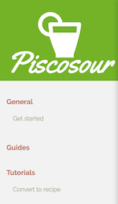

pisco-documentation-build: Create a documentation webpage.
With this recipe you can create a documentation webpage for your recipe based in your .md files.
This website is intended to show a different documentation for the users of your recipe and for the developers.
For every target (users and developers), the documentation is organized in:
guidesTo explain everything related to your recipe.tutorialsQuick and guided examples.documentationfor the API documentation.
To install it run:
npm install -g pisco-documentation-build
How to use it.
1. Organize your docs.
In order to create your website correctly, you must organize your docs folder according to this tree:
docs
│ index.md
│
└─── users
│ │ get_started.md
| | general01.md
| | ...
│ └─── guides
│ │ | guide01.md
│ │ | ...
│ │
│ └─── tutorials
│ | tutorial01.md
│ | ...
│
└─── developers
│ │ get_started.md
| | general02.md
| | ...
│ └─── guides
│ │ | guide02.md
│ │ | ...
│ │
│ └─── tutorials
│ | tutorial02.md
│ | ...
│
└─── images
│ │ image01.jpg
│ │ ...
│
Required files and folders:
- It's required to have an
index.mdin the root of your documentation folder. (See the next step to see how to create one). - It's required to have the folders
usersanddevelopers. - It's required to have a
get_started.mdfile atusersanddevelopersfolders. - It's required to have a
logo.svgfile in yourimagesfolder.
Other considerations:
- It's not mandatory but recommended to have
guidesandtutorials. Even if you don't have any the submenu will appear.

- If you use images in your md files, you should place them in a
imagesfolder at thedocsfolder root.
2. Create an index.md
It's necessary to create an index.md in the root of your documentation folder in order to have an entry point of your website.
The content of this file should be only this metadata.
---
toolName: [Your tool name]
claim: [A short and fresh sentence]
npmName: [Tool name in npm]
layout: index.html
---
layoutwill be alwaysindex.htmlfor the index.md file.
3. Add metadata to all your md files.
It's necessary to provide a little bit of information about your documentation files to create the webpage correctly, so all your md files shoud have this metadata at the top.
---
title: [Page title]
layout: doc_page.html
---
titlewill be always the name of the link in the main menu.layoutwill be alwaysdoc_page.htmlfor your documentation files.
4. Set a template to create the site.
In order to generate the site, you can use the default pisco template for sites (pisco-site-template-basic) or create your own template.
To set the template you should add it as dependency in your project.
For example, if you use the default pisco template, just add in your project's package.json:
{
"pisco-site-template-basic": "*"
}
5. Add a logo.
It's mandatory to have a logo.svg file in your docs/image folder. This is the file used to print the logo at your index page an in the menu.
6. Add guides and tutorials.
Now you can add as much guides and tutorials as you want to your documentation. Add a md file for each guide or tutorial trying to use the best practices that you can find at the end of this doc.
7. Generate auto-documentation pages.
As we commented in the first lines we will have guides, tutorials, and documentation for every target.
This documentation is automatically filled when you run recipe:docs flow.
This flow will automatically create:
- A
documentationfolder atuserswith one md file for each command available at your recipe. - A
documentationfolder atdeveloperswith the documentation of each plugin of your recipe.
So, in order to have this
8. Create your site!
Ok, now everything is ready to create your site automagically!. Just run:
pisco documentation:build
Or if your documentation folder is not docs
pisco documentation:build --docsSource [folder-name]
This will create your site files in a folder named dist. If you want to use a different name, just run:
pisco documentation:build --destination [destination-folder]
- If your repo is a github repo, you will be asked to upload the website as Github Pages. This, internally, will create/update a branch named
gh-pageswith the content of the dist folder.
Best practices writing your md files.
Use only one h1.
Your md documents should have one and only one h1 (# whatever) which is the title of your document.
Code blocks
The markdown parser will guess which language are you using in your code blocks, but to ensure a good highlight just add to your code block what language are you adding the language name to it as follows:
- bash:
```bash
[your code]
```
- javascript:
```javascript
[your code]
```
- json
```json
[your code]
```
- You will find a complete list at this link: Highlight supported languages